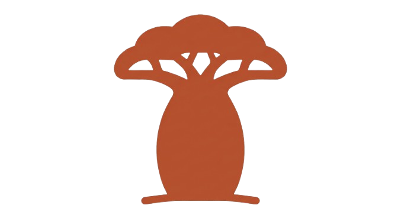
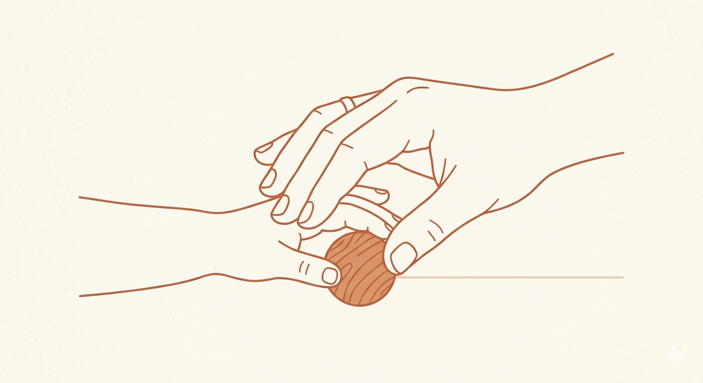

Institute for Afrocentric Montessori & Community Education is a teacher training and leadership development center dedicated to reimagining Montessori education for African classrooms. Rooted in Ubuntu and powered by Montessori on Wheels (MoW), the Institute prepares educators to deliver child-centered, culturally grounded, and community-responsive learning in both urban and rural contexts.

We exist to close the gap between Montessori theory and the lived realities of African schools. Our training integrates Montessori principles with:
Through practical workshops, coaching, research, and community partnership, we equip teachers not only to manage classrooms—but to transform them.

Our vision is an Africa where every classroom nurtures dignity, curiosity,
and leadership, guided by Montessori principles and grounded in Ubuntu.

Our mission is to prepare and support African educators to deliver Montessori education that is culturally responsive, community-rooted, and excellence-driven.